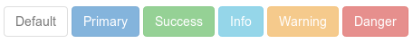
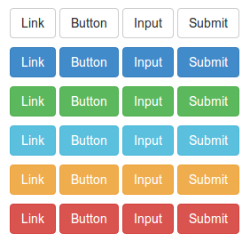
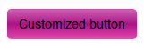
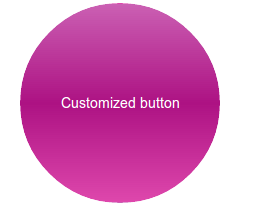
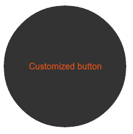

Bootstrap Botones
Objetivo
Los botones se utilizan ampliamente en sitios web o aplicaciones. En este tutorial, mediante ejemplos y explicaciones de ejemplos, discutiremos cómo usar los botones de Bootstrap 3 y cómo personalizar los botones predeterminados.
Usar botones predeterminados
El siguiente ejemplo demostrará cómo crear botones rápidamente con Bootstrap 3.
Ejemplo
<html>
<head>
<title>Bootstrap 3 botones predeterminados</title>
<meta name="viewport" content="width=device-width, initial-scale=1.0">
<!-- Bootstrap -->
<link href="dist/css/bootstrap.min.css.html" rel="stylesheet" media="screen">
<style>
body {
padding: 50px
}
</style>
<!-- HTML5 Shim y Respond.js para que IE8 admita elementos HTML5 y consultas de medios. -->
<!-- ADVERTENCIA: Respond.js no funcionará si ve la página a través de file:// -->
<!--[if lt IE 9]>
<script src="https://oss.maxcdn.com/libs/html5shiv/3.7.0/html5shiv.js"></script>
<script src="https://oss.maxcdn.com/libs/respond.js/1.3.0/respond.min.js"></script>
<![endif]-->
</head>
<body>
<!-- Botón estándar -->
<button type="button" class="btn btn-default">Predeterminado</button>
<!-- Proporciona efectos visuales adicionales que identifican la acción principal en un grupo de botones -->
<button type="button" class="btn btn-primary">Principal</button>
<!-- Representa una acción exitosa o positiva -->
<button type="button" class="btn btn-success">Éxito</button>
<!-- Botón contextual para mensajes de información -->
<button type="button" class="btn btn-info">Información</button>
<!-- Representa una acción que debe tomarse con precaución -->
<button type="button" class="btn btn-warning">Advertencia</button>
<!-- Representa una acción peligrosa o potencialmente negativa -->
<button type="button" class="btn btn-danger">Peligro</button>
<!-- No enfatiza que es un botón; parece un enlace, pero mantiene el comportamiento de un botón -->
<button type="button" class="btn btn-link">Enlace</button>
<!-- jQuery (necesario para los complementos de JavaScript de Bootstrap) --->
<script src="https://code.jquery.com/jquery.js"></script>
<!-- Incluye todos los complementos compilados (como se muestra a continuación), o incluye archivos individuales según sea necesario -->
<script src="dist/js/bootstrap.min.js.html"></script>
</body>
</html>
El código anterior produce lo siguiente. Puedehacer clic aquí para ver el ejemplo en línea。

CSS
Exploremos las reglas CSS utilizadas para crear estos botones. La clase principal para crear botones esbtn, como se muestra a continuación.
.btn {
display: inline-block;
padding: 6px 12px;
margin-bottom: 0;
font-size: 14px;
font-weight: normal;
line-height: 1.428571429;
text-align: center;
white-space: nowrap;
vertical-align: middle;
cursor: pointer;
background-image: none;
border: 1px solid transparent;
border-radius: 4px;
-webkit-user-select: none;
-moz-user-select: none;
-ms-user-select: none;
-o-user-select: none;
user-select: none;
}
Debido al código CSS anterior, el botón (con la clase btn) se muestra como inline-block, lo que permite que el botón se muestre en línea con los elementos adyacentes que comparten su línea base, pero puede agregarle los atributos width y height. Su relleno superior e inferior son de 6 y 12 píxeles respectivamente. El margen inferior se establece en 0.
El tamaño de fuente se establece en 14 píxeles y el grosor de la fuente en normal. La altura de línea del botón con la clase btn es 1.428571429, ligeramente mayor que la altura predeterminada 1. El texto está alineado al centro.
La propiedad white-space se establece en nowrap, por lo que las nuevas líneas, espacios y tabulaciones se colapsarán. Los elementos verticalmente centrados se posicionarán en la mitad de la altura. Cuando pasa el cursor sobre el elemento, el cursor se mostrará como un puntero. Aquí no se mostrarán imágenes de fondo.
Aquí se mostrará un borde sólido transparente de 1 píxel de grosor. Debido aborder-radius: 4px;, las esquinas del botón serán redondeadas. Aumentando o disminuyendo el valor de 4px, puede hacer que el redondeo de las esquinas sea mayor o menor. Debido auser-select: none, el texto del botón y sus elementos secundarios no será seleccionable. Para obtener consistencia entre navegadores, la misma propiedad se aplica con prefijos de varios proveedores.
Cada botón mostrado en el ejemplo anterior, además debtntiene otra clase CSS, como btn-default, btn-primary, etc. Estas clases se utilizan para establecer lacolor、background-color 和 borderpropiedad. Son reglas CSS para botones normales y botones con estados de enlace (es decir, hover, active, focus, etc.).
btn-primaryEl código de la clase es el siguiente
.btn-primary {
color: #ffffff;
background-color: #428bca;
border-color: #357ebd;
}
Botones de diferentes tamaños
Aquí hay tres tamaños que se pueden configurar. Para configurar cada tamaño, se debe agregar una clase adicional.
btn-lg for setting large button.
<button type="button" class="btn btn-primary btn-lg">Large button</button>
El código CSS de la clase btn-lg es el siguiente
.btn-lg {
padding: 10px 16px;
font-size: 18px;
line-height: 1.33;
border-radius: 6px;
}
Usarbtn-sm 和 btn-xspara configurar botones con diferentes tamaños.
<button type="button" class="btn btn-primary btn-sm">Large button</button> <button type="button" class="btn btn-primary btn-xs">Large button</button>
El código CSS de las clases btn-sm y btn-xs es el siguiente
.btn-sm,
.btn-xs {
padding: 5px 10px;
font-size: 12px;
line-height: 1.5;
border-radius: 3px;
}
.btn-xs {
padding: 1px 5px;
}
El siguiente código demuestra diferentes tipos de botones con diferentes tamaños. Puedehacer clic aquí para ver la demostración en línea. A continuación se muestran la captura de pantalla y el código.

Ejemplo
<html>
<head>
<title>Bootstrap 3 botones de diferentes tamaños</title>
<meta name="viewport" content="width=device-width, initial-scale=1.0">
<!-- Bootstrap -->
<link href="dist/css/bootstrap.min.css.html" rel="stylesheet" media="screen">
<style>
body {
padding: 50px
}
</style>
<!-- HTML5 Shim y Respond.js para que IE8 admita elementos HTML5 y consultas de medios. -->
<!-- ADVERTENCIA: Respond.js no funcionará si ve la página a través de file:// -->
<!--[if lt IE 9]>
<script src="https://oss.maxcdn.com/libs/html5shiv/3.7.0/html5shiv.js"></script>
<script src="https://oss.maxcdn.com/libs/respond.js/1.3.0/respond.min.js"></script>
<![endif]-->
</head>
<body>
<!-- Botón estándar -->
<p>
<button type="button" class="btn btn-default btn-sm">Predeterminado pequeño</button>
<button type="button" class="btn btn-default btn-lg">Predeterminado grande</button>
<button type="button" class="btn btn-default btn-xs">Predeterminado extra pequeño</button>
</p>
<p>
<!-- Proporciona efectos visuales adicionales que identifican la acción principal en un grupo de botones -->
<button type="button" class="btn btn-primary btn-sm">Principal pequeño</button>
<button type="button" class="btn btn-primary btn-lg">Principal grande</button>
<button type="button" class="btn btn-primary btn-xs">Principal extra pequeño</button>
</p>
<p>
<!-- Representa una acción exitosa o positiva -->
<button type="button" class="btn btn-success btn-sm">Éxito pequeño</button>
<button type="button" class="btn btn-success btn-lg">Éxito grande</button>
<button type="button" class="btn btn-success btn-xs">Éxito extra pequeño</button>
</p>
<p>
<!-- Botón contextual para mensajes de información -->
<button type="button" class="btn btn-info btn-sm">Información pequeña</button>
<button type="button" class="btn btn-info btn-lg">Información grande</button>
<button type="button" class="btn btn-info btn-xs">Información extra pequeña</button>
</p>
<p>
<!-- Representa una acción que debe tomarse con precaución -->
<button type="button" class="btn btn-warning btn-sm">Advertencia pequeña</button>
<button type="button" class="btn btn-warning btn-lg">Advertencia grande</button>
<button type="button" class="btn btn-warning btn-xs">Botón de advertencia extra pequeño</button>
</p>
<p>
<!-- Indica una acción peligrosa o potencialmente negativa. -->
<button type="button" class="btn btn-danger btn-sm">Botón de peligro pequeño</button>
<button type="button" class="btn btn-danger btn-lg">Botón de peligro grande</button>
<button type="button" class="btn btn-danger btn-xs">Botón de peligro extra pequeño</button>
</p>
<p>
<!-- No enfatiza que sea un botón; parece un enlace, pero mantiene el comportamiento de un botón. -->
<button type="button" class="btn btn-link btn-sm">Botón de enlace pequeño</button>
<button type="button" class="btn btn-link btn-lg">Botón de enlace grande</button>
</p>
<!-- jQuery (necesario para los plugins de JavaScript de Bootstrap) -->
<script src="https://code.jquery.com/jquery.js"></script>
<!-- Incluye todos los plugins compilados (a continuación) o incluye archivos individuales según sea necesario. -->
<script src="dist/js/bootstrap.min.js.html"></script>
</body>
</html>
Botones de bloque
Para usar todo el ancho del contenedor donde se encuentra el botón, Bootstrap 3 proporciona la opción de botones de bloque. Debe agregarbtn-blockla class a las class mencionadas anteriormente para crear botones de bloque.
<button type="button" class="btn btn-primary btn-lg btn-block">Large button</button> <button type="button" class="btn btn-success btn-lg btn-block">Large button</button>
La definición CSS para crear botones de bloque es la siguiente
.btn-block {
display: block;
width: 100%;
padding-right: 0;
padding-left: 0;
}
.btn-block + .btn-block {
margin-top: 5px;
}
A continuación se muestran la captura de pantalla y el código de los botones de bloque. Puedehacer clic aquí para ver el ejemplo en línea.。
Ejemplo
<html>
<head>
<title>Botones de bloque de Bootstrap 3</title>
<meta name="viewport" content="width=device-width, initial-scale=1.0">
<!-- Bootstrap -->
<link href="dist/css/bootstrap.min.css.html" rel="stylesheet" media="screen">
<style>
body {
padding: 50px
}
</style>
<!-- HTML5 Shim y Respond.js para que IE8 admita elementos HTML5 y media queries. -->
<!-- ADVERTENCIA: Respond.js no funcionará si se ve la página a través de file://. -->
<!--[if lt IE 9]>
<script src="https://oss.maxcdn.com/libs/html5shiv/3.7.0/html5shiv.js"></script>
<script src="https://oss.maxcdn.com/libs/respond.js/1.3.0/respond.min.js"></script>
<![endif]-->
</head>
<body>
<div class="container">
<div class="row">
<div class="col-lg-12">
<!-- Botón estándar -->
<p>
<button type="button" class="btn btn-primary btn-sm btn-block">Botón de bloque pequeño predeterminado</button>
<button type="button" class="btn btn-default btn-lg btn-block">Botón de bloque grande predeterminado</button>
<button type="button" class="btn btn-primary btn-xs btn-block">Botón de bloque extra pequeño predeterminado</button>
</p>
<p>
<!-- Proporciona efectos visuales adicionales para identificar la acción primaria en un grupo de botones. -->
<button type="button" class="btn btn-primary btn-sm btn-block">Botón de bloque primario pequeño</button>
<button type="button" class="btn btn-primary btn-lg btn-block">Botón de bloque primario grande</button>
<button type="button" class="btn btn-primary btn-xs btn-block">Botón de bloque primario extra pequeño</button>
</p>
<p>
<!-- Indica una acción exitosa o positiva. -->
<button type="button" class="btn btn-success btn-sm btn-block">Botón de bloque de éxito pequeño</button>
<button type="button" class="btn btn-success btn-lg btn-block">Botón de bloque de éxito grande</button>
<button type="button" class="btn btn-success btn-xs btn-block">Botón de bloque de éxito extra pequeño</button>
</p>
<p>
<!-- Botón contextual para mensajes de alerta informativos. -->
<button type="button" class="btn btn-info btn-sm btn-block">Botón de bloque de información pequeño</button>
<button type="button" class="btn btn-info btn-lg btn-block">Botón de bloque de información grande</button>
<button type="button" class="btn btn-info btn-xs btn-block">Botón de bloque de información extra pequeño</button>
</p>
<p>
<!-- Indica una acción que debe tomarse con precaución. -->
<button type="button" class="btn btn-warning btn-sm btn-block">Botón de bloque de advertencia pequeño</button>
<button type="button" class="btn btn-warning btn-lg btn-block">Botón de bloque de advertencia grande</button>
<button type="button" class="btn btn-warning btn-xs btn-block">Botón de bloque de advertencia extra pequeño</button>
</p>
<p>
<!-- Indica una acción peligrosa o potencialmente negativa. -->
<button type="button" class="btn btn-danger btn-sm btn-block">Botón de bloque de peligro pequeño</button>
<button type="button" class="btn btn-danger btn-lg btn-block">Botón de bloque de peligro grande</button>
<button type="button" class="btn btn-danger btn-xs btn-block">Botón de bloque de peligro extra pequeño</button>
</p>
<p>
<!-- No enfatiza que sea un botón; parece un enlace, pero mantiene el comportamiento de un botón. -->
<button type="button" class="btn btn-link btn-sm btn-block">Botón de bloque de enlace pequeño</button>
<button type="button" class="btn btn-link btn-lg btn-block">Botón de bloque de enlace grande</button>
</p>
</div>
</div>
</div>
<!-- jQuery (necessary for Bootstrap's JavaScript plugins) -->
<script src="https://code.jquery.com/jquery.js"></script>
<!-- Include all compiled plugins (below), or include individual files as needed -->
<script src="dist/js/bootstrap.min.js.html"></script>
</body>
</html>

Botones activos
Puede usaractivela CSS class para dar una apariencia diferente a botones o enlaces, para mostrar que están activos. Aquí tiene unejemplo de demostración, captura de pantalla y código.

Ejemplo
<html>
<head>
<title>Botones activos de Bootstrap 3</title>
<meta name="viewport" content="width=device-width, initial-scale=1.0">
<!-- Bootstrap -->
<link href="dist/css/bootstrap.min.css.html" rel="stylesheet" media="screen">
<style>
body {
padding: 50px
}
</style>
<!-- HTML5 Shim y Respond.js para que IE8 admita elementos HTML5 y media queries. -->
<!-- ADVERTENCIA: Respond.js no funcionará si se ve la página a través de file://. -->
<!--[if lt IE 9]>
<script src="https://oss.maxcdn.com/libs/html5shiv/3.7.0/html5shiv.js"></script>
<script src="https://oss.maxcdn.com/libs/respond.js/1.3.0/respond.min.js"></script>
<![endif]-->
</head>
<body>
<!-- Botón estándar -->
<button type="button" class="btn btn-default active">Predeterminado</button>
<!-- Proporciona efectos visuales adicionales para identificar la acción primaria en un grupo de botones. -->
<button type="button" class="btn btn-primary active">Primario</button>
<!-- Indica una acción exitosa o positiva. -->
<button type="button" class="btn btn-success active">Éxito</button>
<!-- Botón contextual para mensajes de alerta informativos. -->
<button type="button" class="btn btn-info active">Información</button>
<!-- Indica una acción que debe tomarse con precaución. -->
<button type="button" class="btn btn-warning active">Advertencia</button>
<!-- Indica una acción peligrosa o potencialmente negativa. -->
<button type="button" class="btn btn-danger active">Peligro</button>
<!-- No enfatiza ser un botón, parece un enlace, pero mantiene el comportamiento de un botón -->
<button type="button" class="btn btn-link active">Enlace</button>
<!-- jQuery (es necesario para los complementos de JavaScript de Bootstrap)--->
<script src="https://code.jquery.com/jquery.js"></script>
<!-- Incluye todos los complementos compilados (a continuación), o archivos individuales según sea necesario -->
<script src="dist/js/bootstrap.min.js.html"></script>
</body>
</html>
Usando las herramientas de desarrollador de Chrome, veremos que cuando al botón se le añadeactiveclass, las reglas CSS entran en vigor.
Botón activo Default
.btn-default:hover, .btn-default:focus, .btn-default:active, .btn-default.active, .open .dropdown-toggle.btn-default {
color: #333;
background-color: #ebebeb;
border-color: #adadad;
}
Botón activo Primary
.btn-primary:hover, .btn-primary:focus, .btn-primary:active, .btn-primary.active, .open .dropdown-toggle.btn-primary {
color: #fff;
background-color: #3276b1;
border-color: #285e8e;
}
Botón activo Success
.btn-success:hover, .btn-success:focus, .btn-success:active, .btn-success.active, .open .dropdown-toggle.btn-success {
color: #fff;
background-color: #47a447;
border-color: #398439;
}
Botón activo Info
.btn-info:hover, .btn-info:focus, .btn-info:active, .btn-info.active, .open .dropdown-toggle.btn-info {
color: #fff;
background-color: #39b3d7;
border-color: #269abc;
}
Botón activo Warning
.btn-warning:hover, .btn-warning:focus, .btn-warning:active, .btn-warning.active, .open .dropdown-toggle.btn-warning {
color: #fff;
background-color: #ed9c28;
border-color: #d58512;
}
Botón activo Danger
.btn-danger:hover, .btn-danger:focus, .btn-danger:active, .btn-danger.active, .open .dropdown-toggle.btn-danger {
color: #fff;
background-color: #d2322d;
border-color: #ac2925;
}
Botón activo Link
.btn-link, .btn-link:hover, .btn-link:focus, .btn-link:active {
border-color: transparent;
}
Por lo tanto, puede ver que estos se logran cambiando las propiedades color, backgound-color y border-color.
Botones deshabilitados
Puede usardisabledla clase CSS para dar a los botones o enlaces una apariencia diferente, para mostrar que están deshabilitados. Aquí hay unademostración de ejemplo, captura de pantalla y código.
Para que el botón se vea algo atenuado, use las siguientes reglas CSS (ubicadas a través de las herramientas de desarrollador de Chrome).
.btn[disabled], fieldset[disabled] .btn {
pointer-events: none;
cursor: not-allowed;
opacity: .65;
filter: alpha(opacity=65);
-webkit-box-shadow: none;
box-shadow: none;
}

Ejemplo
<html>
<head>
<title>Bootstrap 3 botones deshabilitados</title>
<meta name="viewport" content="width=device-width, initial-scale=1.0">
<!-- Bootstrap -->
<link href="dist/css/bootstrap.min.css.html" rel="stylesheet" media="screen">
<style>
body {
padding: 50px
}
</style>
<!-- HTML5 Shim y Respond.js soporte de IE8 para elementos HTML5 y consultas de medios. -->
<!-- ADVERTENCIA: Respond.js no funcionará si la página se ve a través de file://. -->
<!--[if lt IE 9]>
<script src="https://oss.maxcdn.com/libs/html5shiv/3.7.0/html5shiv.js"></script>
<script src="https://oss.maxcdn.com/libs/respond.js/1.3.0/respond.min.js"></script>
<![endif]-->
</head>
<body>
<!-- Botón estándar -->
<button type="button" class="btn btn-default" disabled="disabled">Por defecto</button>
<!-- Proporciona un efecto visual adicional, identificando la acción primaria en un grupo de botones. -->
<button type="button" class="btn btn-primary" disabled="disabled">Primario</button>
<!-- Representa una acción exitosa o positiva. -->
<button type="button" class="btn btn-success" disabled="disabled">Éxito</button>
<!-- Botón contextual para mensajes de información o advertencia. -->
<button type="button" class="btn btn-info" disabled="disabled">Información</button>
<!-- Indica una acción que debe tomarse con precaución. -->
<button type="button" class="btn btn-warning" disabled="disabled">Advertencia</button>
<!-- Indica una acción peligrosa o potencialmente negativa. -->
<button type="button" class="btn btn-danger" disabled="disabled">Peligro</button>
<!-- jQuery (es necesario para los complementos de JavaScript de Bootstrap)--->
<script src="https://code.jquery.com/jquery.js"></script>
<!-- Incluye todos los complementos compilados (a continuación), o archivos individuales según sea necesario -->
<script src="dist/js/bootstrap.min.js.html"></script>
</body>
</html>
Elementos de anclaje deshabilitados
Cuando un elemento de ancla con class btn y otras clases relacionadas se muestra como deshabilitado, es un poco diferente a lo normal. Primero, el enlace del elemento de ancla todavía existe; solo cambian la apariencia y la sensación. Además, no puede usarlos en la barra de navegación.
Haga clic aquí para ver la demostración en línea. El código es el siguiente:
Ejemplo
<html>
<head>
<title>Bootstrap 3 botones de ancla deshabilitados</title>
<meta name="viewport" content="width=device-width, initial-scale=1.0">
<!-- Bootstrap -->
<link href="dist/css/bootstrap.min.css.html" rel="stylesheet" media="screen">
<style>
body {
padding: 50px
}
</style>
<!-- HTML5 Shim y Respond.js soporte de IE8 para elementos HTML5 y consultas de medios. -->
<!-- ADVERTENCIA: Respond.js no funcionará si la página se ve a través de file://. -->
<!--[if lt IE 9]>
<script src="https://oss.maxcdn.com/libs/html5shiv/3.7.0/html5shiv.js"></script>
<script src="https://oss.maxcdn.com/libs/respond.js/1.3.0/respond.min.js"></script>
<![endif]-->
</head>
<body>
<!-- Botón estándar -->
<a href="http://www.example.com" class="btn btn-default disabled" role="button">Por defecto</a>
<!-- Proporciona un efecto visual adicional, identificando la acción primaria en un grupo de botones. -->
<a href="http://www.example.com" class="btn btn-primary disabled" role="button">Primario</a>
<!-- Representa una acción exitosa o positiva. -->
<a href="http://www.example.com" class="btn btn-success disabled" role="button">Éxito</a>
<!-- Botón contextual para mensajes de información o advertencia. -->
<a href="http://www.example.com" class="btn btn-info disabled" role="button">Información</a>
<!-- Indica una acción que debe tomarse con precaución. -->
<a href="http://www.example.com" class="btn btn-warning disabled" role="button">Advertencia</a>
<!-- Indica una acción peligrosa o potencialmente negativa. -->
<a href="http://www.example.com" class="btn btn-danger disabled" role="button">Peligro</a>
<!-- jQuery (es necesario para los complementos de JavaScript de Bootstrap)--->
<script src="https://code.jquery.com/jquery.js"></script>
<!-- Incluye todos los complementos compilados (a continuación), o archivos individuales según sea necesario -->
<script src="dist/js/bootstrap.min.js.html"></script>
</body>
</html>
Tenga en cuenta que,role="button"se usa con fines de facilidad de uso.
Etiquetas de botón
Puede usar las clases de botón a través de los elementos button, a e input para tratar los botones como etiquetas. Sin embargo, se recomienda usarlos generalmente a través del elemento button; de lo contrario, causará problemas de inconsistencia entre navegadores.
El siguiente ejemplo demuestra cómo usar etiquetas de botones.

Ejemplo
<html>
<head>
<title>Bootstrap 3 ejemplo de etiquetas de botones</title>
<meta name="viewport" content="width=device-width, initial-scale=1.0">
<!-- Bootstrap -->
<link href="dist/css/bootstrap.min.css.html" rel="stylesheet" media="screen">
<style>
body {
padding: 50px
}
</style>
<!-- HTML5 Shim y Respond.js soporte de IE8 para elementos HTML5 y consultas de medios. -->
<!-- ADVERTENCIA: Respond.js no funcionará si la página se ve a través de file://. -->
<!--[if lt IE 9]>
<script src="https://oss.maxcdn.com/libs/html5shiv/3.7.0/html5shiv.js"></script>
<script src="https://oss.maxcdn.com/libs/respond.js/1.3.0/respond.min.js"></script>
<![endif]-->
</head>
<body>
<p>
<a class="btn btn-default" href="../index.html" role="button">Enlace</a>
<button class="btn btn-default" type="submit">Botón</button>
<input class="btn btn-default" type="button" value="Entrada">
<input class="btn btn-default" type="submit" value="Enviar">
</p>
<p>
<a class="btn btn-primary" href="../index.html" role="button">Enlace</a>
<button class="btn btn-primary" type="submit">Botón</button>
<input class="btn btn-primary" type="button" value="Entrada">
<input class="btn btn-primary" type="submit" value="Enviar">
</p>
<p>
<a class="btn btn-success" href="../index.html" role="button">Enlace</a>
<button class="btn btn-success" type="submit">Botón</button>
<input class="btn btn-success" type="button" value="Entrada">
<input class="btn btn-success" type="submit" value="Enviar">
</p>
<p>
<a class="btn btn-info" href="../index.html" role="button">Enlace</a>
<button class="btn btn-info" type="submit">Botón</button>
<input class="btn btn-info" type="button" value="Entrada">
<input class="btn btn-info" type="submit" value="Enviar">
</p>
<p>
<a class="btn btn-warning" href="../index.html" role="button">Enlace</a>
<button class="btn btn-warning" type="submit">Botón</button>
<input class="btn btn-warning" type="button" value="Entrada">
<input class="btn btn-warning" type="submit" value="Enviar">
</p>
<p>
<a class="btn btn-danger" href="../index.html" role="button">Enlace</a>
<button class="btn btn-danger" type="submit">Botón</button>
<input class="btn btn-danger" type="button" value="Entrada">
<input class="btn btn-danger" type="submit" value="Enviar">
</p>
<!-- jQuery (necesario para los complementos de JavaScript de Bootstrap)--->
<script src="https://code.jquery.com/jquery.js"></script>
<!-- Incluye todos los complementos compilados (como se muestra a continuación), o incluye archivos individuales según sea necesario -->
<script src="dist/js/bootstrap.min.js.html"></script>
</body>
</html>
Haga clic aquí para ver la demostración en línea.
Botones personalizados
Ahora comenzaremos a personalizar con el botón predeterminado, dándole una apariencia y sensación completamente diferentes.
Comenzaremos con el siguiente código de botón.
<button type="button" class="btn btn-default">Default</button>
Ahora vamos a crear una clase CSS.btn-w3r, y usarla para reemplazar btn-default. Por lo tanto, escribiremos el siguiente código para reemplazar el código anterior.
<button type="button" class="btn btn-w3r">Default</button>
Primero cambiaremos el color de fondo, agregando el siguiente CSS.
.btn-w3r {
background: #cb60b3; /* Old browsers */
background: -moz-linear-gradient(top, #cb60b3 0%, #ad1283 50%, #de47ac 100%); /* FF3.6+ */
background: -webkit-gradient(linear, left top, left bottom, color-stop(0%,#cb60b3), color-stop(50%,#ad1283), color-stop(100%,#de47ac)); / * Chrome,Safari4+ */
background: -webkit-linear-gradient(top, #cb60b3 0%,#ad1283 50%,#de47ac 100%); /* Chrome10+,Safari5.1+ */
background: -o-linear-gradient(top, #cb60b3 0%,#ad1283 50%,#de47ac 100%); /* Opera 11.10+ */
background: -ms-linear-gradient(top, #cb60b3 0%,#ad1283 50%,#de47ac 100%); /* IE10+ */
background: linear-gradient(to bottom, #cb60b3 0%,#ad1283 50%,#de47ac 100%); /* W3C */
filter: progid:DXImageTransform.Microsoft.gradient( startColorstr='#cb60b3', endColorstr='#de47ac',GradientType=0 ); /* IE6-9 */
}
Ahora el botón se ve así.

Para cambiar el color de la fuente, agregaremosbtn-w3rel siguiente CSS después del código CSS de la clase existente.
color:#fff;

Ahora, para que la forma del botón se vea circular, agregaremosbtn-w3rel siguiente CSS antes del código CSS de la clase existente.
width: 200px; height: 200px; -moz-border-radius: 50%; -webkit-border-radius: 50%; border-radius: 50%;

Para agregar un efecto de hover, agregaremos el siguiente código CSS.
.btn-w3r:hover {
background: #333;
color:#e75616;
}
A continuación se muestra el efecto de hover del botón después de agregar el código CSS anterior.

Puedehacer clic aquí para ver la demostración en línea de los botones personalizados que creamos.。
Otras extensiones
Haz clic para compartir notas
<p style="font-size:14px;">¡Las notas deben ser una extensión del contenido de este artículo!</p><br> <p style="font-size:12px;"><a href="../tougao.html" target="_blank">Envío de artículos, haga clic aquí</a></p> <p style="font-size:14px;"><a href="../w3cnote/runoob-user-test-intro.html" target="_blank">Cómo obtener el código de invitación de registro</a></p> <h3 class="text-muted"><i class="fa fa-info-circle" aria-hidden="true"></i> Antes de compartir notas, debe <a href=";.html" class="runoob-pop">iniciar sesión</a>!</h3> <p><a href="../w3cnote/runoob-user-test-intro.html" target="_blank">Cómo obtener el código de invitación de registro</a></p>